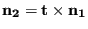

Next: Weir Crest
Up: Fluid Section Types: Open
Previous: Sluice Gate
Contents
The sluice opening element is always adjacent to a sluice gate element on its
downstream side. Both are illustrated in Figure 123. The sluice
opening element has the gate door located at its upstream end node. Since the
water depth in the downstream end node of this element should represent the depth
just downstream of the gate door, the length of this element should be chosen
to be particularly small. The following constants have to be specified on the
line beneath the *FLUID SECTION,TYPE=CHANNEL SLUICE OPENING card:
- the width

- the slope
 (if
(if  the slope is calculated from the
coordinates of the end nodes belonging to the element)
the slope is calculated from the
coordinates of the end nodes belonging to the element)
- the length  (if
 the length is calculated from the
coordinates of the end nodes belonging to the element)
the length is calculated from the
coordinates of the end nodes belonging to the element)
- the trapezoid angle

- the grain diameter
 for the White-Colebrook law or the Manning
constant
for the White-Colebrook law or the Manning
constant  for the Manning law (in the latter case the user has to specify
the parameter MANNING on the *FLUID SECTION card)
for the Manning law (in the latter case the user has to specify
the parameter MANNING on the *FLUID SECTION card)
- the number of the upstream sluice gate element
The meaning of ,  , and can be derived from Figure
122.
, and can be derived from Figure
122.
Example files: channel1, chanson1.
Next: Weir Crest
Up: Fluid Section Types: Open
Previous: Sluice Gate
Contents
guido dhondt
2018-12-15